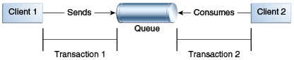

context.createProducer()
.setDeliveryMode(DeliveryMode.NON_PERSISTENT).send(dest, msg);
|
Plataforma Java, Edición Empresarial (Java EE) 8 El Tutorial de Java EE |
| Anterior | Siguiente | Contenidos |
Esta sección explica cómo usar las características de la IPA de JMS para lograr el nivel de confiabilidad y rendimiento que requiere su aplicación. Muchas personas usan JMS en sus aplicaciones porque no pueden tolerar mensajes perdidos o duplicados y porque requieren que cada mensaje se reciba una sola vez. La IPA de JMS proporciona esta funcionalidad.
La forma más confiable de producir un mensaje es enviar un mensaje PERSISTENT, y
hacerlo dentro de una transacción.
Los mensajes JMS son PERSISTENT por defecto; Los mensajes PERSISTENT no
se perderán en caso de falla del proveedor JMS. Para más detalles, consulte
Especificación de la Persistencia de Mensajes.
Las transacciones permiten enviar o recibir múltiples mensajes en una operación atómica. En la plataforma Java EE también permiten combinar envíos y recepciones de mensajes con lecturas y escrituras de bases de datos en una transacción atómica. Una transacción es una unidad de trabajo en la que puede agrupar una serie de operaciones, como envíos y recepciones de mensajes, de modo que todas las operaciones se realicen correctamente o todas fallen. Para obtener más información, consulte Uso de Transacciones Locales de JMS.
La forma más confiable de consumir un mensaje es hacerlo dentro de una transacción, ya sea desde una cola o desde una suscripción duradera a un tema. Para obtener más información, consulte Creación de Suscripciones Duraderas, Creación de Destinos Temporales y Uso de Transacciones Locales de JMS.
Algunas funciones permiten principalmente que una aplicación mejore el rendimiento. Por ejemplo, puede configurar los mensajes para que caduquen después de un cierto período de tiempo (consulte Permitir que los Mensajes Caduquen), para que los consumidores no reciban información obsoleta innecesaria. Puede enviar mensajes de forma asíncrona; ver Envío de Mensajes de Forma Asíncrona.
También puede especificar varios niveles de control sobre el reconocimiento de mensajes; ver Control de la Confirmación del Mensaje.
Otras características pueden proporcionar capacidades útiles no relacionadas con la confiabilidad. Por ejemplo, puede crear destinos temporales que duran solo la duración de la conexión en la que se crean. Ver Creación de Destinos Temporales para más detalles.
Las siguientes secciones describen estas funciones según se aplican a clientes de aplicaciones o clientes Java SE. Algunas de las características funcionan de manera diferente en el contenedor web Java EE o EJB; en estos casos, las diferencias se indican aquí y se explican en detalle en Uso de la IPA de JMS en Aplicaciones de Java EE.
Hasta que se haya reconocido un mensaje JMS, no se considera que se haya consumido correctamente. El consumo exitoso de un mensaje normalmente tiene lugar en tres etapas.
El cliente recibe el mensaje.
El cliente procesa el mensaje.
El mensaje es reconocido. El reconocimiento lo inicia el proveedor de JMS o el cliente, según el modo de reconocimiento de la sesión.
En las sesiones con transacciones locales (ver Uso de Transacciones Locales de JMS), se reconoce un mensaje cuando se confirma la sesión. Si se revierte una transacción, todos los mensajes consumidos se vuelven a entregar.
En una transacción JTA (en la web de Java EE o en el contenedor EJB) se reconoce un mensaje cuando se confirma la transacción.
En sesiones sin transacciones, cuándo y cómo se reconoce un mensaje depende de un valor que se
puede especificar como argumento del método createContext. Los posibles valores de
argumento son los siguientes.
JMSContext.AUTO_ACKNOWLEDGE: esta configuración es la predeterminada para
clientes de aplicaciones y clientes Java SE. El JMSContext reconoce
automáticamente la recepción de un mensaje por parte de un cliente, ya sea cuando el cliente
ha regresado con éxito de una llamada a receive o cuando el
MessageListener ha llamado para procesar el mensaje devuelve con éxito.
Una recepción síncrona en un JMSContext que está configurado para usar
reconocimiento automático es la única excepción a la regla de que el consumo de mensajes
es un proceso de tres etapas, como se describió anteriormente. En este caso, la recepción
y el acuse de recibo se realizan en un solo paso, seguido del procesamiento del mensaje.
JMSContext.CLIENT_ACKNOWLEDGE: un cliente reconoce un mensaje llamando al
método acknowledge del mensaje. En este modo, el reconocimiento se realiza a
nivel de sesión: el reconocimiento de un mensaje consumido reconoce automáticamente la
recepción de todos los mensajes consumidos por su sesión. Por ejemplo, si un consumidor de
mensajes consume diez mensajes y luego reconoce el quinto mensaje entregado, se reconocen
los diez mensajes.
|
Nota:
En la plataforma Java EE, la configuración
|
JMSContext.DUPS_OK_ACKNOWLEDGE: esta opción instruye al JMSContext
para que reconozca la entrega de mensajes de forma diferida. Es probable que esto resulte en
la entrega de algunos mensajes duplicados si el proveedor de JMS falla, por lo que solo
deben usarlo los consumidores que pueden tolerar mensajes duplicados. (Si el proveedor de
JMS vuelve a enviar un mensaje, debe establecer el valor del encabezado del mensaje
JMSRedelivered en true). Esta opción puede reducir la sobrecarga
de la sesión al minimizar el trabajo que realiza la sesión. para evitar duplicados.
Si se recibieron mensajes de una cola pero no se confirmaron cuando se cerró un
JMSContext, el proveedor de JMS los retiene y los vuelve a entregar cuando un
consumidor acceda a la cola a continuación. El proveedor también conserva los mensajes no
reconocidos si una aplicación cierra un JMSContext que ha estado consumiendo
mensajes de una suscripción duradera. (Consulte
Creación de Suscripciones Duraderas.) Los mensajes no
reconocidos que se hayan recibido de una suscripción no duradera se eliminarán cuando el
JMSContext esté cerrado.
Si usa una cola o una suscripción duradera, puede usar el método JMSContext.recover
para detener un JMSContext sin transacciones y reiniciarlo con su primer mensaje no
reconocido. En efecto, la serie de mensajes entregados de JMSContext se restablece
al punto posterior a su último mensaje reconocido. Los mensajes que entrega ahora pueden ser
diferentes de los que se entregaron originalmente, si los mensajes han caducado o si han llegado
mensajes de mayor prioridad. Para un consumidor con una suscripción no duradera, el proveedor
puede descartar mensajes no reconocidos cuando se llama al método
JMSContext.recover.
El programa de muestra en Confirmación de Mensajes demuestra dos formas de garantizar que un mensaje no se reconocerá hasta que se complete el procesamiento del mensaje.
Puede establecer una serie de opciones cuando envía un mensaje. Estas opciones le permiten realizar las tareas descritas en los siguientes temas:
Especificación de la Persistencia de Mensajes – Especifique que los mensajes son persistentes, lo que significa que no deben perderse en caso de falla del proveedor.
Configuración de los Niveles de Prioridad de los Mensajes – Establezca niveles de prioridad para los mensajes, lo que puede afectar el orden en que se entregan los mensajes.
Permitir que los Mensajes Caduquen – Especifique un tiempo de caducidad para los mensajes para que no se entreguen si están obsoletos.
Especificación de un Retraso de Entrega – Especifique un retraso en la entrega de los mensajes para que no se entreguen hasta que haya expirado un período de tiempo específico.
Uso del Encadenamiento de Métodos de JMSProducer – El encadenamiento
de métodos le permite especificar más de una de estas opciones cuando crea un productor y
llama al método send.
La IPA de JMS admite dos modos de entrega que especifican si los mensajes se pierden si falla
el proveedor de JMS. Estos modos de entrega son campos de la interfaz
DeliveryMode.
El modo de entrega predeterminado, PERSISTENT, indica al proveedor de JMS que
tenga especial cuidado para asegurarse de que un mensaje no se pierda en tránsito en caso
de falla del proveedor de JMS. Un mensaje enviado con este modo de entrega se registra en
un almacenamiento estable cuando se envía.
El modo de entrega NON_PERSISTENT no requiere que el proveedor JMS almacene
el mensaje ni garantiza que no se pierda si el proveedor falla.
Para especificar el modo de entrega, use el método setDeliveryMode de la
interfaz JMSProducer para establecer el modo de entrega para todos los mensajes
enviados por ese productor.
Puede usar el encadenamiento de métodos para establecer el modo de entrega cuando crea un
productor y envía un mensaje. La siguiente llamada crea un productor con un modo de entrega
NON_PERSISTENT y lo usa para enviar un mensaje:
context.createProducer()
.setDeliveryMode(DeliveryMode.NON_PERSISTENT).send(dest, msg);
Si no especifica un modo de entrega, el valor predeterminado es PERSISTENT. El
uso del modo de entrega NON_PERSISTENT puede mejorar el rendimiento y reducir la
sobrecarga de almacenamiento, pero debe usarlo solo si su aplicación puede permitirse perder
mensajes.
Puede usar niveles de prioridad de mensajes para indicarle al proveedor de JMS que entregue
primero los mensajes urgentes. Utilice el método setPriority de la interfaz
JMSProducer para establecer el nivel de prioridad para todos los mensajes
enviados por ese productor.
Puede usar el encadenamiento de métodos para establecer el nivel de prioridad cuando crea un productor y envía un mensaje. Por ejemplo, la siguiente llamada establece un nivel de prioridad de 7 para un productor y luego envía un mensaje:
context.createProducer().setPriority(7).send(dest, msg);
Los diez niveles de prioridad van desde 0 (más bajo) a 9 (más alto). Si no especifica un nivel de prioridad, el nivel predeterminado es 4. Un proveedor de JMS intenta entregar los mensajes de mayor prioridad antes que los de menor prioridad, pero no tiene que entregar los mensajes en el orden exacto de prioridad.
De forma predeterminada, un mensaje nunca caduca. Sin embargo, si un mensaje se vuelve
obsoleto después de cierto período, es posible que desee establecer un tiempo de caducidad.
Utilice el método setTimeToLive de la interfaz JMSProducer para
establecer un tiempo de caducidad predeterminado para todos los mensajes enviados por ese
productor.
Por ejemplo, un mensaje que contiene datos que cambian rápidamente, como el precio de una acción, quedará obsoleto después de unos minutos, por lo que puede configurar los mensajes para que caduquen después de ese tiempo.
Puede usar el encadenamiento de métodos para establecer el tiempo de vida cuando crea un productor y envía un mensaje. Por ejemplo, la siguiente llamada establece un tiempo de vida de cinco minutos para un productor y luego envía un mensaje:
context.createProducer().setTimeToLive(300000).send(dest, msg);
Si el valor timeToLive especificado es 0, el mensaje nunca caduca.
Cuando se envía el mensaje, el timeToLive especificado se agrega a la hora actual
para dar la hora de vencimiento. Cualquier mensaje que no se entregue antes del tiempo de
caducidad especificado se destruye. La destrucción de mensajes obsoletos conserva los recursos
informáticos y de almacenamiento.
Puede especificar un período de tiempo que debe transcurrir después de enviar un mensaje antes
de que el proveedor JMS entregue el mensaje. Utilice el método setDeliveryDelay
de la interfaz JMSProducer para establecer un retraso de entrega para todos los
mensajes enviados por ese productor.
Puede usar el encadenamiento de métodos para establecer el retraso de entrega cuando crea un productor y envía un mensaje. Por ejemplo, la siguiente llamada establece un retraso de entrega de 3 segundos para un productor y luego envía un mensaje:
context.createProducer().setDeliveryDelay(3000).send(dest, msg);
Los métodos de establecimiento en la interfaz JMSProducer devuelven objetos
JMSProducer, por lo que puede usar el encadenamiento de métodos para crear un
productor, establecer varias propiedades y enviar un mensaje. Por ejemplo, las siguientes
llamadas a métodos encadenados crean un productor, establecen una propiedad definida por el
usuario, establecen la caducidad, el modo de entrega y la prioridad del mensaje, y luego
envían un mensaje a una cola:
context.createProducer()
.setProperty("MyProperty", "MyValue")
.setTimeToLive(10000)
.setDeliveryMode(NON_PERSISTENT)
.setPriority(2)
.send(queue, body);
También puede llamar a los métodos JMSProducer para establecer propiedades en un
mensaje y luego enviar el mensaje en una llamada de método send independiente.
También puede establecer las propiedades del mensaje directamente en un mensaje.
Normalmente, los destinos JMS (colas y temas) se crean administrativamente en lugar de mediante programación. Su proveedor de JMS incluye una herramienta para crear y eliminar destinos, y es común que los destinos sean de larga duración.
La IPA de JMS también le permite crear destinos (objetos TemporaryQueue y
TemporaryTopic) que duran solo la duración de la conexión en la que se crean. Estos
destinos se crean dinámicamente utilizando los métodos
JMSContext.createTemporaryQueue y JMSContext.createTemporaryTopic,
como en el siguiente ejemplo:
TemporaryTopic replyTopic = context.createTemporaryTopic();
Los únicos consumidores de mensajes que pueden consumir desde un destino temporal son los creados por la misma conexión que creó el destino. Cualquier productor de mensajes puede enviar al destino temporal. Si cierra la conexión a la que pertenece un destino temporal, el destino se cierra y su contenido se pierde.
Puede utilizar destinos temporales para implementar un mecanismo simple de solicitud/respuesta.
Si crea un destino temporal y lo especifica como el valor del campo de encabezado del mensaje
JMSReplyTo cuando envía un mensaje, entonces el consumidor del mensaje puede usar
el valor del campo JMSReplyTo como el destino al que envía una respuesta. El
consumidor también puede hacer referencia a la solicitud original configurando el campo de
encabezado JMSCorrelationID del mensaje de respuesta al valor del campo de
encabezado JMSMessageID de la solicitud. Por ejemplo, un método
onMessage puede crear un JMSContext para que pueda enviar una
respuesta al mensaje que recibe. Puede usar código como el siguiente:
replyMsg = context.createTextMessage("Mensaje procesado por el consumidor: "
+ msg.getText());
replyMsg.setJMSCorrelationID(msg.getJMSMessageID());
context.createProducer().send((Topic) msg.getJMSReplyTo(), replyMsg);
Para ver un ejemplo, consulte Uso de una Entidad para Unir Mensajes de Dos MDB.
Una transacción agrupa una serie de operaciones en una unidad atómica de trabajo. Si alguna de las operaciones falla, la transacción puede revertirse y las operaciones pueden intentarse nuevamente desde el principio. Si todas las operaciones tienen éxito, la transacción puede confirmarse.
En un cliente de aplicación o un cliente Java SE, puede usar transacciones locales para agrupar
envíos y recepciones de mensajes. Utiliza el método JMSContext.commit para
confirmar una transacción. Puede enviar varios mensajes en una transacción y los mensajes no se
agregarán a la cola o al tema hasta que se confirme la transacción. Si recibe varios mensajes en
una transacción, no se confirmarán hasta que se confirme la transacción.
Puede usar el método JMSContext.rollback para revertir una transacción. Una
reversión de transacción significa que todos los mensajes producidos se destruyen y todos los
mensajes consumidos se recuperan y se vuelven a entregar a menos que hayan caducado (ver
Permitir que los Mensajes Caduquen).
Una sesión transaccionada siempre está involucrada en una transacción. Para crear una sesión con
transacciones, llame al método createContext de la siguiente manera:
JMSContext context =
connectionFactory.createContext(JMSContext.SESSION_TRANSACTED);
Tan pronto como se llama al método commit o rollback, finaliza una
transacción y comienza otra transacción. Al cerrar una sesión con transacción, se revierte la
transacción en curso, incluidos los envíos y recepciones pendientes.
En una aplicación que se ejecuta en el contenedor web o EJB de Java EE, no puede utilizar transacciones locales. En su lugar, utiliza transacciones JTA, descritas en Uso de la IPA de JMS en Aplicaciones de Java EE.
Puede combinar varios envíos y recepciones en una sola transacción local JMS, siempre que todos
se realicen con el mismo JMSContext.
No utilice una sola transacción si utiliza un mecanismo de solicitud/respuesta, en el que envía un mensaje y luego recibe una respuesta a ese mensaje. Si intenta utilizar una sola transacción, el programa se bloqueará porque el envío no puede realizarse hasta que se confirme la transacción. El siguiente fragmento de código ilustra el problema:
// ¡No haga esto!
outMsg.setJMSReplyTo(replyQueue);
context.createProducer().send(outQueue, outMsg);
consumer = context.createConsumer(replyQueue);
inMsg = consumer.receive();
context.commit();
Debido a que un mensaje enviado durante una transacción no se envía realmente hasta que se confirma la transacción, la transacción no puede contener ninguna recepción que dependa de que se haya enviado ese mensaje.
La producción y el consumo de un mensaje no pueden formar parte de la misma transacción. La razón es que las transacciones se dan entre los clientes y el proveedor JMS, que interviene entre la producción y el consumo del mensaje. La Figura 48-8 ilustra esta interacción.

El envío de uno o más mensajes a uno o más destinos por parte del Cliente 1 puede formar una
única transacción, porque forma un único conjunto de interacciones con el proveedor JMS
utilizando un único JMSContext. De manera similar, la recepción de uno o más
mensajes de uno o más destinos por parte del Cliente 2 también forma una sola transacción
utilizando un solo JMSContext. Pero debido a que los dos clientes no tienen
interacción directa y utilizan dos objetos JMSContext diferentes, no se pueden
realizar transacciones entre ellos.
Otra forma de expresar esto es que una transacción es un contrato entre un cliente y un proveedor JMS que define si un mensaje se envía a un destino o si se recibe un mensaje desde el destino. No es un contrato entre el cliente emisor y el cliente receptor.
Esta es la diferencia fundamental entre la mensajería y el procesamiento sincronizado. En lugar de vincular estrechamente al remitente y al receptor de un mensaje, JMS vincula al remitente de un mensaje con el destino, y vincula por separado el destino con el receptor del mensaje. Por lo tanto, mientras que los envíos y los receptores tienen un estrecho acoplamiento con el proveedor JMS, no tienen ningún acoplamiento entre sí.
Cuando crea un JMSContext, puede especificar si se tramita utilizando el argumento
JMSContext.SESSION_TRANSACTED para el método createContext. Por
ejemplo:
try (JMSContext context = connectionFactory.createContext(
JMSContext.SESSION_TRANSACTED);) {
...
Los métodos commit y rollback para transacciones locales están
asociados con la sesión que subyace al JMSContext. Puede combinar operaciones en
más de una cola o tema, o en una combinación de colas y temas, en una sola transacción si usa la
misma sesión para realizar las operaciones. Por ejemplo, puede usar el mismo
JMSContext para recibir un mensaje de una cola y enviar un mensaje a un tema en la
misma transacción.
El ejemplo en Uso de Transacciones Locales muestra cómo usar las transacciones locales de JMS.
Normalmente, cuando envía un mensaje persistente, el método send se bloquea hasta
que el proveedor de JMS confirma que el mensaje se envió correctamente. El mecanismo de envío
asíncrono permite que su aplicación envíe un mensaje y continúe trabajando mientras espera saber
si el envío se completó.
Actualmente, esta función solo está disponible en clientes de aplicaciones y clientes Java SE.
Enviar un mensaje de forma asincrónica implica proporcionar un objeto de devolución de llamada.
Especificas un CompletionListener con un método onCompletion. Por
ejemplo, el siguiente código instancia un CompletionListener llamado
SendListener. Luego llama al método setAsync para especificar que los
envíos de este productor deben ser asíncronos y deben usar el oyente especificado:
CompletionListener listener = new SendListener();
context.createProducer().setAsync(listener).send(dest, message);
La clase CompletionListener debe implementar dos métodos, onCompletion
y onException. Se llama al método onCompletion si el envío tiene
éxito, y se llama al método onException si falla. Una implementación simple de
estos métodos podría verse así:
@Override
public void onCompletion(Message message) {
System.out.println("Método onCompletion: el envío se ha completado.");
}
@Override
public void onException(Message message, Exception e) {
System.out.println("Método onException: envío fallido: " + e.toString());
System.out.println("El mensaje no enviado es: \n" + message);
}
| Anterior | Siguiente | Contenidos |